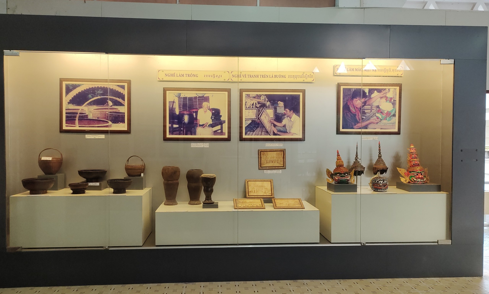
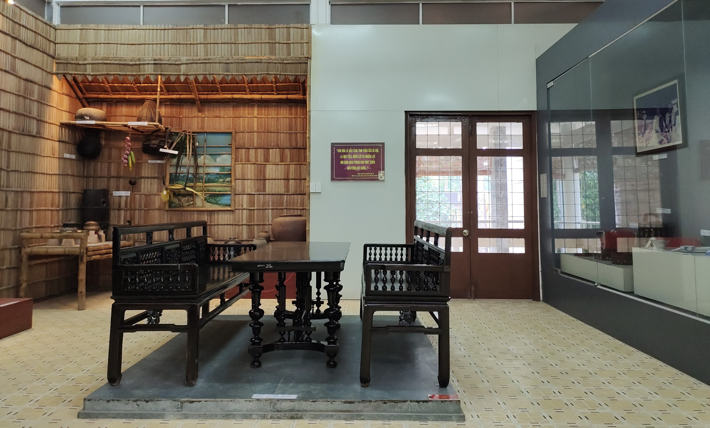

ប្រភេទ
ឧទ្ទេសនាម
សារមន្ទីរវប្បធម៌ជនជាតិខ្មែរខេត្តត្រាវិញ ឋិតនៅក្នុងតំបន់ទេសចរណ៍គូស្រះស្រីនិងវត្តអង្គររាជបូរី(អង្គ) អនុសង្កាត់៤ សង្កាត់៨ ក្រុងត្រាវិញ ខេត្តត្រាវិញ ជាសារមន្ទីរធំមួយក្នុងចំណោមសារមន្ទីរជនជាតិខ្មែរធំៗទាំងពីរនៅវៀតណាម។ សារមន្ទីរវប្បធម៌ជនជាតិខ្មែរខេត្តត្រាវិញ បានសាងសង់ឡើងពីឆ្នាំ១៩៩២ដល់ឆ្នាំ១៩៩៦ ហើយត្រូវបានដាក់ឱ្យប្រើប្រាស់ជាផ្លូវការនៅឆ្នាំ១៩៩៧។ តាមការឱ្យដឹងពីលោក ត្វឹង នាយកមជ្ឈមណ្ឌលព័ត៌មានដំណើរការទេសចរណ៍ ថ្មីៗនេះ មន្ទីរវប្បធម៌ កីឡា និងទេសចរណ៍ បានធ្វើការជួសជុលសារមន្ទីរវប្បធម៌ជនជាតិខ្មែរជាលើកទី១ ដោយចំណាយថវិកាប្រមាណ ២,៤ ពាន់លានដុង ។ បច្ចុប្បន្ន សារមន្ទីរបានបើកទ្វារឱ្យភ្ញៀវទេសចរចូលទស្សនាដោយឥតគិតថ្លៃ។ ...
ពិធីបុណ្យ
ក្នុងចំណោមពិធីបុណ្យ និងព្រឹត្តិការណ៍វប្បធម៌ដែលប្រារព្ធឡើងជារៀងរាល់ឆ្នាំនៅត្រាវិញ ពិធីបុណ្យចំនួនបីដែលទាក់ទាញភ្ញៀវទេសចរណ៍ច្រើនជាងគេគឺ៖ ពិធីបុណ្យ បុណ្យអកអំបុក របស់ជនជាតិខ្មែរ ពិធីបុណ្យ ពិធីបុណ្យវូឡាងថាំងហោយ ឬគេស្គាល់ថាជាពិធីបុណ្យ ...
បន្ទប់តាំងបង្ហាញ

មណ្ឌលតាំងពិព័រណ៌ ១៖
តាំងពិព័រណ៍ ឧទ្ទេសនាមពីវប្បធម៌ខាងផ្លូវចិត្តរបស់ជនជាតិខ្មែរនៅត្រាវិញ នោះគឺវត្តខ្មែរមានតួនាទីសំខាន់បំផុត។ នៅទីតាំងដ៏ឧត្តុងឧត្តមបំផុត បានដាក់បង្ហាញទម្រង់ព្រះវិហារវត្តខ្មែរ គ្រែទេសន៍ និងរូបភាពឧទ្ទេសនាមវត្តខ្មែរទាំង១៤៣វត្ត នៅខេត្តត្រាវិញ; ទម្រង់សាលាអ្នកតា និងវត្ថុតាំងដែលជាផលិតផលចម្លាក់ថ្មដ៏មានតម្លៃ ដែលមានលក្ខណៈព្រហ្មញ្ញសាសនា និងព្រះពុទ្ធសាសនា ឆ្លុះបញ្ចាំងពីការវិវឌ្ឍជីវភាពផ្លូវចិត្តក្នុងប្រវត្តិសាស្ត្ររបស់ជនជាតិខ្មែរណាមបូនិយាយរួម ខ្មែរត្រាវិញនិយាយដោយឡែក ដូចជា គារវបដិមា Linga - Yoni, Mukhalinga, រូបសំណាកព្រះ (ព្រះសិវៈ, ព្រះវិស្ណុ), Avalokitesvara, Lokesvara, ព្រះពុទ្ធបដិមាជាដើម។ ...

មណ្ឌលតាំងពិព័រណ៌ ២៖
ឧទ្ទេសនាមអំពីវប្បធម៌សម្ភារៈ ម្ហូបអាហារ សម្លៀកបំពាក់ ការស្នាក់នៅ ការពលកម្មផលិត និងសកម្មភាពប្រចាំថ្ងៃរបស់ជនជាតិខ្មែរនៅត្រាវិញ។ វត្ថុតាំងឧបករណ៍កសិកម្មរបស់ជនជាតិខ្មែរ ដូចជា រហាត់ទឹក នង្គ័ល រនាស់ ឈើច្រាន កណ្ដៀវ ខ្វែវជាដើម ក្នុងការផលិតកសិកម្ម។ អង្រុត ឈ្នាង លប ស្នជាដើម ក្នុងការធ្វើរនេសាទ និងផលិតផលកុលាលភាជន៍ប្រើប្រាស់។ ឧបករណ៍កសិកម្ម ឧបករណ៍នេសាទ និងរបស់របរប្រើប្រាស់ក្នុងផ្ទះ ទាំងអស់នេះក៏ដូចគ្នានឹងឧបករណ៍របស់ជនជាតិកិញ និងជនជាតិចិនដែរ ប៉ុន្តែមានភាពខុសប្លែកពីគ្នាមួយចំនួនត្រង់ការរចនា រូបរាង និងការរចនាក្បូរក្បាច់លើឧបករណ៍ប៉ុណ្ណោះ។ ពិសេសនៅបន្ទាប់តាំងពិព័រណ៍ មានដាក់បង្ហាញតុបូជាដូនតា ផ្ទះបាយធម្មតានៅតាមភូមិស្រុករបស់ជនជាតិខ្មែរ។ បន្ទាប់មកគឺបង្ហាញពីពិធីចងដៃក្នុងមង្គលការរបស់ជនជាតិខ្មែរផងដែរ។ ...

មណ្ឌលតាំងពិព័រណ៌ ៣៖
ឧទ្ទេសនាមអំពីភូមិរបរប្រពៃណីរបស់ជនជាតិខ្មែរត្រាវិញ ដូចជា របរត្បាញកន្ទេល ចម្លាក់ឈើ ត្បាញបន្ទោះ ដាល់អំបុក និងសិប្បកម្មជាច្រើនទៀត។ល។ វត្ថុតាំងពិព័រណ៌មានរូបភាព និងឧបករណ៍ពលកម្ម ដូចជា កីតម្បាញសំពត់ មណ្ឌលត្បាញកន្ទេល ត្បាល់និងអង្រែបុកអំបុក និងផលិតផលចម្លាក់ពីឈើ ឫស្សី ត្បាញបន្ទោះ និងផលិតផលចម្លាក់វិចិត្រកម្ម គំនូរលើកញ្ចក់ លើផ្ទាំងសំពត់ជាដើម សុទ្ធតែបានឆ្លាក់និងច្នៃចេញពីដៃដ៏ប៉ិនប្រសប់របស់វិចិត្រករខ្មែរ។ ...
